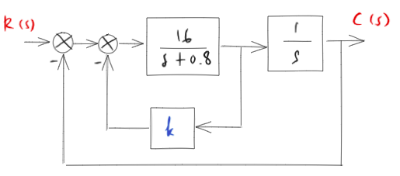

Solved Various Problem Sets¶
from IPython.display import display, Markdown
from sympy import *
from sympy.interactive.printing import init_printing
from sympy.abc import s, K, k, t
from mathprint import *
Problem 1¶
Topics: block diagram, second-order system
Determine the values of \(K\) and \(k\) such that the system has a damping ratio \(\zeta\) of 0.7 and an undamped natural frequency \(\omega_n\) of \(4 \mathrm{rad} / \mathrm{sec}\).
Solution¶
First, simplify the blockdiagram:
G = K / (s+2)
S1 = (G / (1+G*k)) * (1/s) # negative feedback and serial connection
S2 = S1 / (1+S1) # another negative feedback
S2 = collect(expand(simplify(S2)), [s**2, s]) # make it nice
mprint("\\frac{C(s)}{R(s)}=", latex(S2))
Next, the coeficient of \(s\) is \(2 \zeta \omega_n\) and \(K=\omega_n^2\).
zeta = 0.7
omegan = 4
# Take the denom, find the coefficient of s,
# set it equals to 2 * zeta 8 omega_n
eq = Eq(denom(S2).coeff(s), 2*zeta*omegan)
display(eq)
# Set K = omega_n^2
eq = eq.subs(K, omegan**2)
display(eq)
Solve for \(k\):
k_ = solveset(eq, k)
mprint("k=", latex(k_))
So, the final answer is \(k=0.225\).
Problem 2¶
Topics: block diagram, second-order system

Determine the value of \(k\) such that the damping ratio \(\zeta\) is 0.5 . Then obtain the rise time \(t_r\), peak time \(t_p\), maximum overshoot \(M_p\), and settling time \(t_s\) in the unit-step response.
Solution¶
First, simplify the blockdiagram:
G = 16 / (s+0.8)
S1 = (G / (1+G*k)) * (1/s) # negative feedback and serial connection
S2 = S1 / (1+S1) # another negative feedback
S2 = collect(expand(simplify(S2)), [s**2, s]) # make it nice
mprint("\\frac{C(s)}{R(s)}=", latex(S2))
Finding \(k\) for \(\zeta = 0,5\) and \(\omega_n = 4\). Note that the coeficient of \(s\) is \(2 \zeta \omega_n\).
zeta = 0.5
omegan = 4 #sqrt(16)
# Take the demom, find the coefficient of s,
# set it equals to 2 * zeta 8 omega_n
eq = Eq(denom(S2).coeff(s), 2*zeta*omegan)
kval = solve(eq, k)
mprint("k=", latex(kval[0]))
Thus, \(k=0.2\).
Finally, conclude the system, convert it to a transfer function.
To push things a bit further, we will apply inverse Laplace to bring the response back to time-domain and allow us to plot the result.
Please note that SymPy does have a generic function for plotting a step response out of an s-domanin transfer function. However, we are not going to use it here.
G = S2.subs(k, 0.2)
mprint("G(s)=", latex(G))
from sympy.plotting import plot
C = 1/s * G
c = inverse_laplace_transform(C, s, t)
plot(c, (t, 0, 5), size=(4, 3), ylabel="$c(t)$", show=True);
# Rise time
tr = 2*atan(sqrt(zeta+1) / sqrt(1-zeta)) / (omegan * sqrt(1-zeta**2))
# Peak time
tp = pi / (omegan * sqrt(1 - zeta**2))
# Maximum overshoot
Mp = exp(-pi * zeta / sqrt(1 - zeta**2))
# 2-percent settling time
ts = (3.912023 - 0.5 * log(1 - zeta**2)) / (omegan * zeta)
print('rise time =', tr.evalf())
print('peak time =', tp.evalf())
print('maximum overshoot =', Mp.evalf())
print('2-percent-settling time =', ts)
rise time = 0.604599788078073
peak time = 0.906899682117109
maximum overshoot = 0.163033534821580
2-percent-settling time = 2.02793201811295
Comparison to the Python Control Library¶
The results are slightly different from the Python Control Library. This is beacase Python Control Library does the calculations numerically.
import control as ct
s = ct.TransferFunction.s
tf = ct.TransferFunction(16 / (s**2+4*s+16))
ct.step_info(tf, RiseTimeLimits=(0, 1))
{'RiseTime': np.float64(0.6279777526347396),
'SettlingTime': np.float64(2.023483869600828),
'SettlingMin': np.float64(0.9734200938528016),
'SettlingMax': np.float64(1.1630334929041963),
'Overshoot': np.float64(16.303349290419632),
'Undershoot': 0,
'Peak': np.float64(1.1630334929041963),
'PeakTime': np.float64(0.9070789760279573),
'SteadyStateValue': np.float64(1.0)}